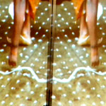
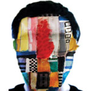
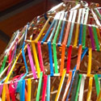

Anja Sieger, a natural born storyteller, is a multidisciplinary artist with an alter ego. Having received her BFA in printmaking and creative writing in Kansas City, Missouri, Sieger returned home to Milwaukee and has been able to marry her love for words, prints, and character by illustrating her thoughts. Known most for her whimsical paper cut outs and tapping away at her typewriter writing prose, fiction, letters, and poetry for strangers...[read more]
IN THIS ISSUE:
CAVT Collective
Amanda McCabe, Bethany Lato, and Emily Porter are the faces behind the Charles Allis Villa Terrace Collective otherwise known as CAVT. Amanda McCabe, an artist and recent art school graduate, was surprised when she had never heard of the museums in Milwaukee, and wanted to do something about public knowledge of these...[read more]
John Kowalczyk
John Kowalczyk was an artist before he even knew what an artist was. Although his art has certain evolved since his Kindergarten art making days, he still seems to uphold that childlike curiosity and creativity for how things work together. Kowalczyk lets his art speak to him through the materials.His paintings are colorful amalgamationsof fabric...[read more]
 "Transitions in Perspective: Myths and Mirrors"
Redline’s show “Transitions in Perspective: Myths and Mirrors” explores the experiences Nirmal Raja and Dara Larson as they embarked on an artistic and cultural exchange in India. The show explores the conversation between Raja, who came to America from India 20 years ago and Dara Larson a first time traveler...[read more]
 Daniel Fleming
Daniel Fleming came to Milwaukee for college to get away from his hometown in Minnesota, and settled right in. Attending MIAD for graphic design, Fleming didn’t see his future in fine art, until he became obsessed with painting. He wishes he could be painting 100% of the time, and these days he is painting on anything he can get his hands on...
[read more] Jason S. Yi
With a myriad of influences, Jason S. Yi, is more than just a visual artist with an architectural background. He is a multi-disciplinary artist, with interests in photography, video, multi-media and installation. A Mary Nohl recipient and former Milwaukee Artist of the Year, Yi is leaving his carbon footprint in the art world...[read more]
Tyanna Buie
Tyanna Buie’s checkered past has made her into the artist that she is today. In and out of foster care as a child, abused, and little knowledge as to where she came from, she is searching for, discovering and re-writing her history through her large scale screen print images. Images that portray a lost childhood...[read more]
C.M.Perceptions
Christopher McIntyre was the youngest artist to be included in the Wisconsin 30 exhibit to accompany the renowned 30 Americans exhibit at the Milwaukee Art Museum last year. But just because he’s young, doesn’t make him naive. He has seen a lot in these Milwaukee streets, and he has captured it with his camera...[read more]